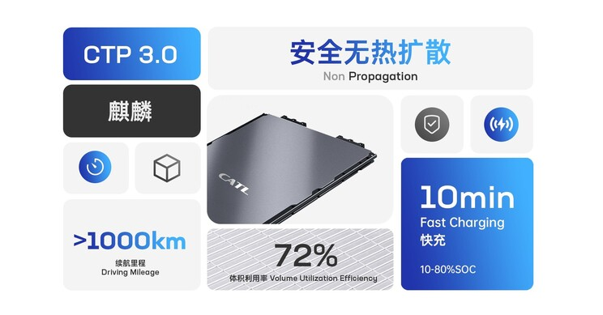
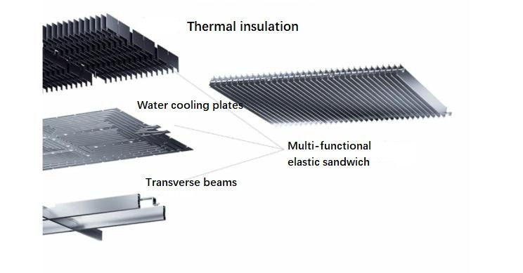
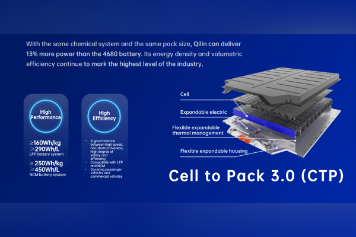
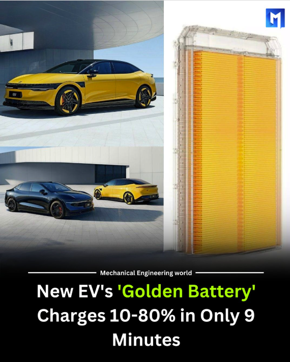
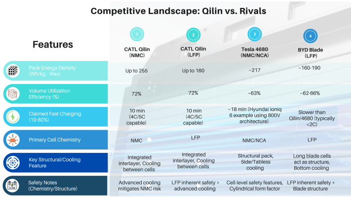
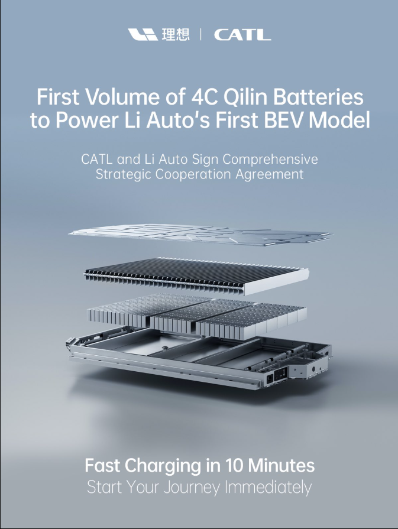
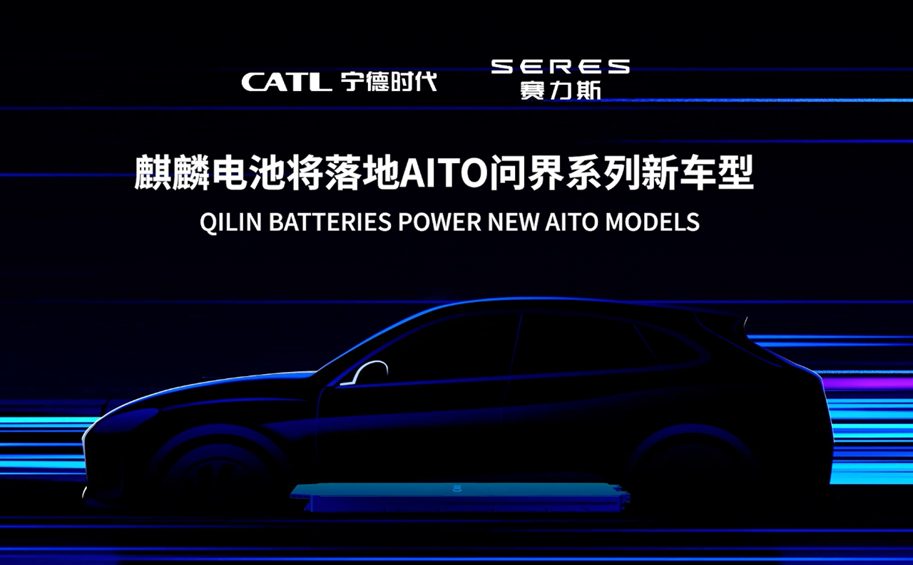

CATL's groundbreaking Qilin Battery represents a significant leap forward in electric vehicle power systems. This third-generation Cell-to-Pack (CTP) technology achieves record-breaking 72% volume utilization efficiency with energy density up to 255 Wh/kg, enabling driving ranges exceeding 1,000 kilometers on a single charge.
The innovative structural design integrates multiple components into a multifunctional elastic interlayer, delivering 13% more power than conventional 4680-type batteries while enhancing safety through revolutionary cooling solutions. Currently in mass production, the Qilin Battery is already being adopted by leading EV manufacturers, signaling a new era in electric vehicle capabilities and performance.

Groundbreaking Technical Innovations
The Qilin battery's most distinctive feature is its structural redesign, which fundamentally reimagines how battery components interact. In traditional battery packs, the internal crossbeam, liquid-cooling plate, and thermal pad exist as separate components. The Qilin battery integrates these elements into a multifunctional elastic interlayer with built-in micron bridges that flexibly accommodate changes inside the cells.
This integrated energy unit creates a more stable load-bearing structure perpendicular to the driving direction, significantly enhancing the shock and vibration resistance of the battery pack. The ingenious "bottom sharing" design allows for smart arrangement of various components, including structural protection, high-voltage connections, and protective vents for thermal runaway, further increasing battery capacity by approximately 6%.

The Qilin battery's water cooling system represents another revolutionary innovation. By placing water-cooled sheets between the prismatic cells, CATL has created a design that prevents heat transfer between adjacent cells and expands the heat exchange area by four times. This arrangement reduces the temperature control time to half of previous designs, supporting 5-minute fast hot starts and dramatically improved charging capabilities.
Impressive Performance Specifications
The Qilin battery achieves remarkable energy density metrics that translate directly to real-world performance benefits. With ternary (nickel manganese cobalt) battery systems, it reaches an energy density of up to 255 Wh/kg, while LFP (lithium iron phosphate) versions deliver 160 Wh/kg. This high energy density enables electric vehicles equipped with Qilin batteries to achieve driving ranges exceeding 1,000 kilometers on a single charge.
Perhaps most impressively, the Qilin battery delivers approximately 13% more power than conventional 4680-type batteries with the same chemical system and pack size. For consumers, this translates to significantly improved vehicle performance without requiring larger battery packs or compromising on space efficiency.

The Zeekr 140kWh CATL Qilin battery pack, which uses NMC chemistry in a cell-to-pack design, showcases these impressive specifications in a commercial application. This pack, used in Zeekr's 001 and 009 models, delivers 140 kWh of total energy with a power output of 444 kW. The pack achieves energy density of 192.5 Wh/kg and 313 Wh/liter, with power density reaching 611 W/kg and 995 W/liter.
Fast charging capabilities represent another significant advantage of the Qilin design. The battery supports 10-minute fast charging in optimal conditions, and the Zeekr implementation demonstrates 10-80% charging in just 28 minutes. This addresses one of the most significant barriers to EV adoption - charging time - bringing electric vehicles closer to the convenience of traditional gasoline refueling.

Enhanced Safety and Reliability Systems
CATL has made safety a central priority in the Qilin battery design. The system meets or exceeds national standard battery safety test requirements, including rigorous evaluations like the bollard test, which assesses the battery's resistance to penetration and damage.
The innovative cooling system not only improves performance but significantly enhances safety. By preventing heat transfer between cells, the risk of thermal runaway - a dangerous chain reaction where battery cells overheat sequentially - is substantially reduced. In extreme circumstances, the system can cool cells rapidly to prevent abnormal thermal conduction.
The battery's structural design contributes to its safety profile as well. The integrated energy unit improves full-life-cycle reliability and resistance to shock and vibration. The multifunctional elastic interlayer with micron bridge connections accommodates the natural expansion and contraction of cells during operation, enhancing reliability throughout the battery's life cycle.
Interestingly, the cooling channels in implementations like the Zeekr pack appear to be trapezoidal in form, potentially reducing compression stiffness and allowing cells to expand over their lifetime. While this clever design accommodates cell expansion, it also suggests that coolant flow backpressure may increase as the cells age.
Competitive Landscape: Qilin vs. Rivals

Adoption by OEMs:
The Qilin battery technology has been adopted or announced for use in a growing number of EV models:
- Zeekr (Geely Group): Zeekr was the launch partner for Qilin. The technology powers the Zeekr 009 MPV (the world's first vehicle with mass-produced Qilin) and is available in the Zeekr 001, including a limited-edition version featuring a 140 kWh pack targeting a 1,032 km CLTC range. A five-year strategic partnership underscores the collaboration.
- Li Auto: Li Auto utilizes Qilin batteries, notably the 5C fast-charging version in its Li Mega MPV.

- AITO (Seres/Huawei Brand): AITO models were among the first announced to adopt Qilin batteries.
- Lotus (Geely Group): The Lotus Eletre electric hyper-SUV is reported to use Qilin battery technology.
- Neta (Hozon Auto): Neta is another brand confirmed to be using Qilin batteries in its vehicles.
- Xiaomi: The Xiaomi SU7 Max employs a Cell-to-Body pack design utilizing the Qilin approach.
Market Adoption and Future Implications
The Qilin battery officially entered mass production in 2023, marking an important transition from prototype to commercial product. Zeekr's 009 electric minivan became the first mass-produced vehicle model equipped with the Qilin battery, with deliveries beginning in the second quarter of 2023. Seres also adopted the technology for its AITO series of vehicles.
The Zeekr implementation of the Qilin battery pack reveals interesting details about real-world applications. The 140kWh pack used in Zeekr vehicles has dimensions of 1580mm x 2020mm x 140mm, with a total volume of 446.8 liters. The battery pack structure utilizes extruded aluminum perimeter beams with top and bottom covers, and the cells are fixed to coolant plates with the ends of the coolant plates not fixed to the outer periphery of the enclosure.

While described as an 800V system in some applications, the Zeekr implementation appears to have cells arranged in a 2p configuration with 108 series connections, suggesting it operates as a 400V system. This highlights the flexibility of the Qilin platform to accommodate different voltage architectures based on manufacturer requirements.
The successful commercialization of the Qilin battery represents a significant milestone in electric vehicle development. With its combination of high energy density, fast charging capabilities, and enhanced safety features, the technology addresses many of the limitations that have historically constrained EV adoption. As more manufacturers integrate this technology into their vehicles, we can expect to see electric vehicles with longer ranges, shorter charging times, and improved overall performance.
Conclusion
CATL's Qilin battery exemplifies how innovative engineering can solve multiple challenges simultaneously. By rethinking the fundamental structure of battery packs, CATL has achieved unprecedented integration efficiency while enhancing performance, safety, and reliability. CATL’s Qilin Battery is more than an upgrade—it’s a full-scale rethinking of how EV batteries should work. With cutting-edge thermal management, unmatched energy density, and real-world deployment, Qilin is shaping the future of clean mobility today. If you’re watching the EV space, don’t blink—CATL is just getting started.